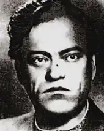
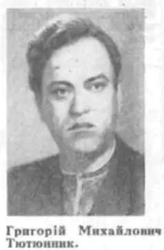
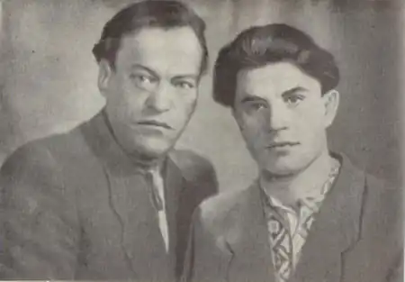

Григорій Тютюнник
(1920 — 1961)
Григорій Михайлович Тютюнник — український прозаїк, поет. Народився 23 квітня 1920p. в селі Шилівка Зіньківського району на Полтавщині. З 1938р. майбутній письменник — студент Харківського університету, навчання в якому перервала війна. Воєнне лихоліття назавжди вкарбувалось в пам'яті і свідомості письменника, до останніх днів життя нагадувало про себе осколком біля серця. В післявоєнні роки був на педагогічній роботі, працював співробітником львівського журналу "Жовтень", вів активну і напружену літературну діяльність. Творчий доробок митця складають збірка оповідань "Зорані межі" (1950), повість "Хмарка сонця не заступить" (1957). Вже після смерті письменника побачила світ збірка поезій воєнного часу "Журавлині ключі" (1963). Роман Г. Тютюнника "Вир" (1960 — 1962) посідає особливе місце як у творчості прозаїка, так і в історії українського письменства. Його поява стала справжньою подією в літературному житті, засвідчила поступове, але неухильне одужання і відродження національної словесності після того удару, якого завдали їй десятиліття сталінського фізичного та ідеологічного терору. Г. Тютюнникові вдалося створити широке епічне полотно, густо населене різноманітними персонажами, в межах якого порушувались як гостро-актуальні, так і вічні проблеми людського буття. Автор відмовився від утверджуваної десятиліттями практики схематизованого, одноплощинного зображення людини, натомість представив своїх героїв насамперед індивідуально неповторними особистостями. Помер 29 серпня 1961p.